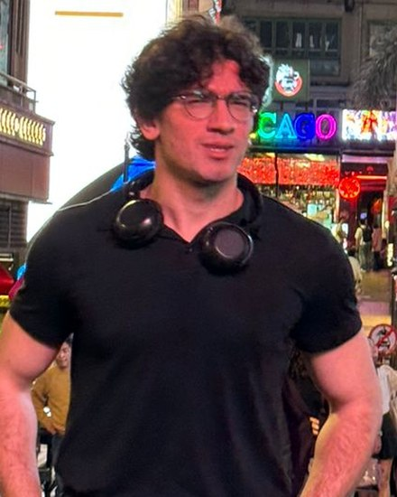

I am a third-year undergraduate at KAIST, double majoring in Electrical Engineering and Mathematics, and graduating in 2028. My interests are in state estimation and SLAM, optimal control, and reinforcement learning for robots and drones, especially how a robot can keep track of where it is when GPS is not available.
I was a research intern at Huawei Hong Kong Research Center, working on robotic manipulation, and an undergraduate researcher in Prof. SooJean Han's Autonomous Control for Stochastic Systems (ACSS) Lab, working on Kalman filtering for aerial vehicles. Before robotics, I competed in physics olympiads and won a bronze medal at IPhO 2023. I now serve as Azerbaijan's team leader at IPhO and EuPhO, and I coach younger students for physics olympiads.
I am looking for robotics research internships for winter 2026–27 and summer 2027. Feel free to reach out by email.